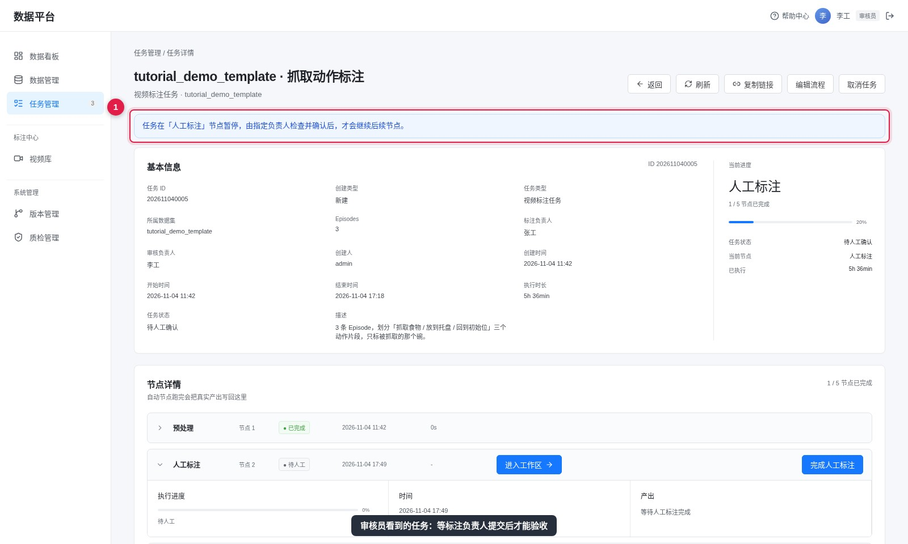
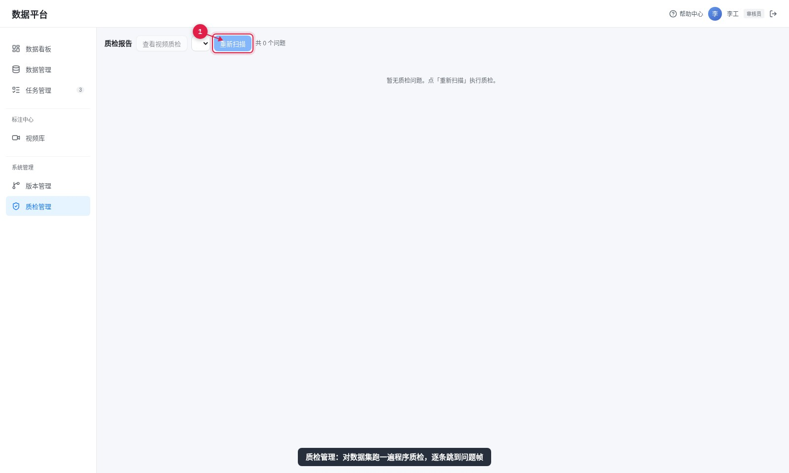

审核员
审核员负责验收：看视频、检查片段和目标框，通过或打回。工作台对审核员是只读的，改不了标注。
能做什么
| 能做 | 不能做 |
|---|---|
| 新建任务、指定标注负责人和审核负责人 | 修改标注（工作台只读） |
| 「查看视频质检」进入只读工作区逐条看 | 管理账号、删除数据集 |
| 对分配给自己的任务点「质检通过」或「打回重标」 | 替别人做审核确认 |
| 编辑流程、返回标注修正 | — |
审核流程



平时也可以用「质检管理」对某个数据集跑一遍程序质检，它会列出有问题的帧，点一下就能跳过去看。

打回时要写什么
打回必须填写原因，这段话会直接显示在标注员的任务里。写得越具体，来回越少：
| 不好的写法 | 好的写法 |
|---|---|
| 不对，重标 | Episode 1 第 6.0–9.5 秒的片段边界提前了，抓到碗之后再开始 |
| 框偏了 | Episode 0「抓取食物」的目标框框到了两个碗，只标被拿的那个 |
| 描述有问题 | Episode 2 的目标应填「托盘」，现在填的是「桌子」 |
另外，如果某条 Episode 确实没法用，可以让标注员用「数据不可用，跳过标注」并填写原因，程序质检会采纳这个原因；没填原因跳过，程序质检不通过。